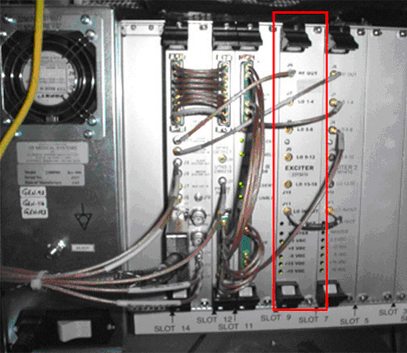
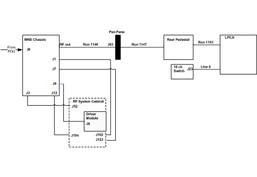

Operating Documentation
Direction 5133315-3, Rev# 14
Signa EXCITE HD 1.5T Service Methods
Module Version 4.0, Version Date 7/17/09
Operating Documentation |
| Required Persons | Preliminary Reqs | Procedure | Finalization |
|---|---|---|---|
| 2 | Not Applicable | 4 hours | Not Applicable |
This procedure consist of the following:
Guidelines and Procedures for Upgrading an Existing MNS Installation
BB Amp I/F and RF Dectector Board Installation for Forward Production (ASC/MGD Chassis)
BB Amp I/F and RF Detector Board Installation for Forward Production (CAM Chassis)
| Item | Qty | Effectivity | Part# | Manufacturer | |
|---|---|---|---|---|---|
| Universal Lift Hoist Kit with ACGD Attachments | 1 | - | 46-317266G6 | - | |
| Standard Hand Tool Set | 1 | - | - | - | |
| ||||
| FATAL ELECTRIC SHOCK HAZARD !! | ||||
| Dangerous voltages throughout the rf cabinet. | ||||
| TO PREVENT FATAL ELECTRIC SHOCK, DISCONNECT POWER FROM THE PDU BEFORE YOU PERFORM THE FOLLOWING PROCEDURES. PERFORM LOCKOUT/TAGOUT PROCEDURE. |
| ||||
| Lifting Hazard ! | ||||
| The CPC Amplifier is heavy and will need a significant amount of balancing to remove it from the RF Accessories Cabinet. | ||||
| Two individuals are required to perform this procedure. |
| Condition | Reference | Effectivity |
|---|---|---|
For Upgrade Systems Containing the SSM: Install the filters from kit 5115463 to each one of the sub-D connectors at the output of the SSM. Instructions for filter installation (5120685INS) are included in the kit 5115463. | - | - |
The connections to the SSM (J507, Spectro bias, spectro A and B) will remain the same.
The RF input to the MNS amplifier cabinet no longer comes from the SSM. The RF input to the MNS amplifier cabinet shall be provided via J52 on the systems cabinet. J52 is the output from the MUX board labeled SLAVE EXCITER OUT. If the BNC connector for J52 is missing, the cable should be in a bag in the systems cabinet.
Install the SSM filter kit FMI if available (For Upgrades ONLY). These filters are placed in-line on all the D-SUB type connections on the rear of the SSM. MNS SNR may improve when installed.
The MNS system shall be calibrated to 1.58 kW (62 dBm) using the adjustable gain potentiometer on the rear of the amplifier. Only the new CPC amplifier is rated to 2 kW.
The MNS receive chain has been changed. There is no longer a dedicated MNS receive line to the systems cabinet. The MNS receive path runs from the RX connector on the LPCA cover, through the cable tray and to J23 on the 16-channel switch.
The previous dedicated MNS receive cabling to the pen panel, 20 dB gain block, and cabling to the systems cabinet may be removed from the system.
The MNS TX path starts at the MNS amplifier RF out and shall pass through the pen panel to the rear pedestal. At the rear pedestal the TX line connects to the cable which runs through the cable tray and is attached directly to the LPCA cover (see Step for LPCA cable routing). Verify -14.5 VDC (Receive) or 5 VDC (Transmit) on the TX line for proper connection.
The TX and RX connections for MNS are new for Excite. TR switch cables plug into these connectors.
A TX patch cable has been provided to run between the TX port on the LPCA cover and the TX port on the Legacy TR switch. This cable is not tuned and therefore may be used for all TR switches.
A RX patch cable has been provided for ONLY the legacy 31P TR switch. A filter designed for 31P has been included in the legacy patch cable. This filter is not compatible with other MNS frequencies. Contact GE Spectroscopy team to obtain RX patch cables for use with legacy TR switches for other frequencies. A 20% loss in SNR will be seen when running MNS without this filter on the legacy RX patch cable.
Install the rails into the RF Cabinet using provided hardware. See Illustration 1. The lower rails should be installed approximately 4 inches or 10 cm above the RF amp. The upper rails should be installed approximately 11 inches or 28 cm above the bottom rails.
| NOTE: | The upper rails prevent the MNS amplifier from accidental tipping or falling during installation. |
Illustration 1: Rails Installed

Install the eight (8) retaining clips onto the rails in the RF cabinet. See Illustration Illustration 2. The retaining clips will secure the amplifier to the cabinet.
Illustration 2: Install Clips

Install the Universal Hoist onto the RF Cabinet. See Illustration 3.
Illustration 3: Universal Hoist Kit Installed to Cabinet

Install the CPC amp onto the Hoist. See Illustration 4.
Illustration 4: CPC Ready to Lift into Cabinet

Install the amplifier. See Illustration 1. One FE must operate the hoist. The other should balance the CPC amp.
Click here to open the 1.5T and 3.0T LPCA Upgrade Instructions for MNS Option.
| NOTE: | MNS T/R Module should be removed from System when Spectroscopy Scanning has been completed. The presence of the module may cause IQ degradation. |
Slide the MNS TR Switch onto the two brackets on the top of the LPCA as shown in Illustration 5.
Attach the cables of the MNS TR switch of the LPCA MNS ports (see Illustration 5).
Illustration 5: Notch Filter Installation

Turn off power to the systems cabinet.
Remove the cover over SLOT 9 and install the SLAVE exciter (2373070). See Illustration 6.
Connect the long cable between the SLAVE exciter RF OUT and the MUX board SLAVE EXCITER IN ports.
Connect the short cable between the SLAVE and MASTER LO IN/OUT ports.
Illustration 6: MGD Chassis with Two EXCITERS

Connect the cable from the MUX board SLAVE EXCITER OUT to the BNC bulkhead fitting J52 on the rear of the systems cabinet.
Remove the two (2) RF Dectector Boards and the Broadband Amplifier I/F Board from their packing material.
At the back of the RFS Cabinet, locate Slots 10 and 13 of the UPM chassis. Insert one RF Detector board in each slot (see Illustration 7).
Locate Slot 6 of the UPM chassis. Insert the Broadband Amplifier I/F Board into this slot (see Illustration 7).
Illustration 7: RF Detector and BB Amp I/F Board in UPM Chassis

Locate the cables labeled Slot 10 J4 and Slot 13 J4. Attach them to their respective connection spots on the two RF Detector Boards, and down to the IO Panel J102 and J104 connections.
Add the 50-ohm terminators to all empty J#’s on the RF Detector Boards.
Locate cable p/n 5113183-4. Attach as labeled, BB Amp I/F Board J3, to Driver Module J13.
Locate cable p/n 5115645. Attach as labeled, BB Amp I/F Board J5, to IO Panel J123.
Remove the two (2) RF Detector Boards and the Broadband Amplifier I/F Board from their packing material.
At the front of the RFS Cabinet, locate Slots 19U and 19L of the CAM Chassis. Insert one RF Detector board in each slot (see Illustration 8).
Locate Slot 17U / 18U of the CAM chassis. Insert the Broadband Amplifier I/F Board into this slot (see Illustration 8).
Illustration 8: RF Detector and BB Amp I/F Board in CAM Chassis

| A | BB Amplifier IF Board - Slot 17U and 18U |
| B | BB UPM RF Detector Board 19U |
| C | BB UPM RF Detector Board 19L |
| D | 50 Ohm Terminators |
| E | Slot Identification Numbers |
Locate the cables labeled CAM Slot 19U-J4 and CAM Slot 19L-J4. Attach them to their respective connection spots on the two RF Detector Boards, and down to the IO Panel J102 and J104 connections.
Add the 50-ohm terminators to all empty J#’s on the RF Detector Boards.
Locate cable p/n 5113183-4. Attach as labeled, BB Amp I/F Board J3, to Driver Module J13.
Locate cable p/n 5115645 (for a 2 kW amplifier) or p/n 5115644 (for a 4 kW amplifier). Attach as labeled, BB Amp I/F Board J5, to IO Panel J123. Refer to Table 1 and Table 2 below for all cable connections.
Table 1: Excite 1.5T w/ 4kW BB Amplifier
| Cable Part Number | CAM Connection | Connect To |
| 5115629 | CAM Slot 19L-J4 | I/O J102 |
| 5115629-3 | CAM Slot 19U-J4 | I/O J104 |
| 5115629-3 | CAM Slot 17U-J3 | Driver J13 |
| 5115644 | CAM Slot 17U-J5 | I/O J123 |
Table 2: Excite 1.5T w/ 2kW BB Amplifier
| Cable Part Number | CAM Connection | Connect To |
| 5115629 | CAM Slot 19L-J4 | I/O J102 |
| 5115629-3 | CAM Slot 19U-J4 | I/O J104 |
| 5115629-3 | CAM Slot 17U-J3 | Driver J13 |
| 5115645 | CAM Slot 17U-J5 | I/O J123 |
See Illustration 9.
Illustration 9: MNS Interconnects on Upgraded System Cabinet

Install Transmit cable run 1147 from rear pedestal to pen panel J83. See the Signa Installation manual for details of terminating RF Cables.
Install Transmit cable run 1146 from MNS amp-RF Out to pen panel-J83.
Install data cable between MNS amp-J7 and SSM-J507.
| NOTE: | If MNS installation is using the new (Silver in Color) CPC amplifier, and not an older ENI or Analogic amplifier from an existing MNS Installation, then a pin extraction tool should be used to remove pin 21 in the cable between the SSM J507 and the amplifier. Use electrical tape on the pin once removed to insulate. |
Install BNC cable between MNS amp-J1 and SSM-J101.
Install BNC cable between MNS amp-J9 and the RF Systems Cabinet's Driver Module J8.
Install an AC Power Cable between MNS Amp-J8 and the PDU Terminals 13, 14, and GND.
Install BNC cable between MNS amp-J12 and SSM-J102.
Install Cable run 1058 from MNS amp-J3 to RF Systems cabinet-MR2-A11-J52.
See Illustration 10.
Illustration 10: MNS Interconnects for Upgrade with RF System Cabinet

Install Transmit cable run 1147 from rear pedestal to pen panel J83. See the Signa Installation manual for details of terminating RF Cables.
Install Transmit cable run 1146 from MNS amp-RF Out to pen panel-J83.
Install data cable between MNS amp-J7 and RF Systems Cabinet-J123.
Install BNC cable between MNS amp-J1 and RF Systems Cabinet-J102.
Install BNC cable between MNS amp-J9 and the RF Systems Cabinet's Driver Module J8.
Install an AC Power Cable between MNS Amp-J8 and the PDU Terminals 13, 14, and GND.
Install BNC cable between MNS amp-J12 and RF Systems Cabinet-J104.
Install Cable run 1058 from MNS amp-J3 to RF Systems cabinet-MR2-A11-J52.
The Cable Map shown below applies to 2 KW MNS Option, additional System Interconnects. See Illustration 11.
Illustration 11: 2 KW MNS Option Additional System Interconnects

Install Transmit cable run 1147 from rear pedestal to pen panel J83. See the Signa Installation manual for details of terminating RF Cables.
Install Transmit cable run 1146 from MNS amp-RF Out (if needed use extension cable 1248) to pen panel-J83.
Install data cable 1227 between MNS amp-J7 and RF Systems Cabinet-J123.
Install BNC cable 1222 between MNS amp-J1 and RF Systems Cabinet-J102.
Install BNC cable 1224 between MNS amp-J9 and the RF Systems Cabinet's Driver Module J8.
Install an AC Power Cable 1237 between MNS Amp-J8 and the PDU Terminals 13, 14, and GND.
Install BNC cable 1223 between MNS amp-J12 and RF Systems Cabinet-J104.
Install Cable run 1221 from MNS amp-J3 to RF Systems cabinet-MR2-A11-J52.
Go to the Service Desktop and start the Service Browser if not already running.
Start the system Config file manager as shown in Illustration 12.
Illustration 12: Starting Config File Manager

See Illustration 13.
Illustration 13: Configure

Go to the [MR Config Files] tab.
Set [Spectroscopy RF Amplifier] and [Broadband Transceiver] to Yes.
Push the [Save Changes] button and then [Quit].
Load the following options:
MNS Option Key
SAGE7
PROBE 3D BRAIN
PROBE2000
Shutdown and restart the system.
Perform the procedure 2KW, 4KW and 8KW MNS Amplifier Calibration.
Remove any extra hardware or tools used during the installation.